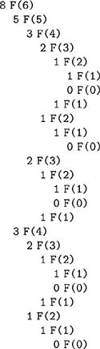
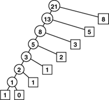
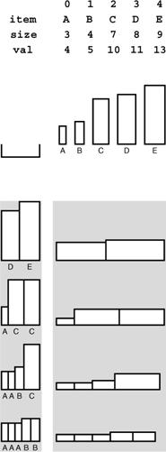
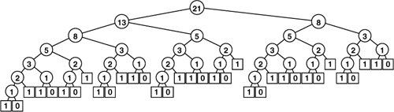
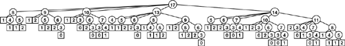
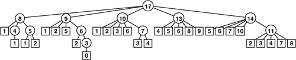
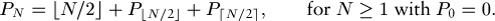
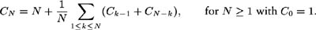
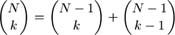
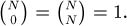

C++ Programming Robert Sedgewick - Princeton University Addison Wesley Professional Algorithms in C++, Parts 1–4: Fundamentals, Data Structure, Sorting, Searching, Third Edition
5.3. Dynamic Programming
An essential characteristic of the divide-and-conquer algorithms that we considered in Section 5.2 is that they partition the problem into independent subproblems. When the subproblems are not independent, the situation is more complicated, primarily because direct recursive implementations of even the simplest algorithms of this type can require unthinkable amounts of time. In this section, we consider a systematic technique for avoiding this pitfall in some cases.
For example, Program 5.10 is a direct recursive implementation of the recurrence that defines the Fibonacci numbers (see Section 2.3). Do not use this program: It is spectacularly inefficient. Indeed, the number of recursive calls to compute FN is exactly FN+1. But FN is about øN, where ø  1:618 is the golden ratio. The awful truth is that Program 5.10 is an exponential-time algorithm for this trivial computation. Figure 5.14, which depicts the recursive calls for a small example, makes plain the amount of recomputation that is involved. 1:618 is the golden ratio. The awful truth is that Program 5.10 is an exponential-time algorithm for this trivial computation. Figure 5.14, which depicts the recursive calls for a small example, makes plain the amount of recomputation that is involved.
The picture of the recursive calls needed to used to compute F8 by the standard recursive algorithm illustrates how recursion with overlapping subproblems can lead to exponential costs. In this case, the second recursive call ignores the computations done during the first, which results in massive recomputation because the effect multiplies recursively. The recursive calls to compute F6 = 8 (which are reflected in the right subtree of the root and the left subtree of the left subtree of the root) are listed below.

By contrast, it is easy to compute the first N Fibonacci numbers in time proportional to N, using an array:
F[0] = 0; F[1] = 1;
for (i = 2; i <= N; i++)
F[i] = F[i-1] + F[i-2];
The numbers grow exponentially, so the array is small—for example, F45 = 1836311903 is the largest Fibonacci number that can be represented as a 32-bit integer, so an array of size 46 will do.
This technique gives us an immediate way to get numerical solutions for any recurrence relation. In the case of Fibonacci numbers, we can even dispense with the array, and keep track of just the previous two values (see Exercise 5.37); for many other commonly encountered recurrences (see, for example, Exercise 5.40), we need to maintain the array with all the known values.
A recurrence is a recursive function with integer values. Our discussion in the previous paragraph leads to the conclusion that we can evaluate any such function by computing all the function values in order starting at the smallest, using previously computed values at each step to compute the current value. We refer to this technique as bottom-up dynamic programming. It applies to any recursive computation, provided that we can afford to save all the previously computed values. It is an algorithm-design technique that has been used successfully for a wide range of problems. We have to pay attention to a simple technique that can improve the running time of an algorithm from exponential to linear!
Top-down dynamic programming is an even simpler view of the technique that allows us to execute recursive functions at the same cost as (or less cost than) bottom-up dynamic programming, in an automatic way. We instrument the recursive program to save each value that it computes (as its final action), and to check the saved values to avoid recomputing any of them (as its first action). Program 5.11 is the mechanical transformation of Program 5.10 that reduces its running time to be linear via top-down dynamic programming. Figure 5.15 shows the drastic reduction in the number of recursive calls achieved by this simple automatic change. Top-down dynamic programming is also sometimes called memoization.
This picture of the recursive calls used to compute F8 by the top-down dynamic programming implementation of the recursive algorithm illustrates how saving computed values cuts the cost from exponential (see Figure 5.14) to linear.

Program 5.10. Fibonacci numbers (recursive implementation)|
This program, although compact and elegant, is not usable because it takes exponential time to compute FN. The running time to compute FN+1 is ø 1.6 times as long as the running time to compute FN. For example, since ø9 > 60, if we notice that our computer takes about a second to compute FN, we know that it will take more than a minute to compute FN+9 and more than an hour to compute FN+18.
int F(int i)
{
if (i < 1) return 0;
if (i == 1) return 1;
return F(i-1) + F(i-2);
}
|
For a more complicated example, consider the knapsack problem: A thief robbing a safe finds it filled with N types of items of varying size and value, but has only a small knapsack of capacity M to use to carry the goods. The knapsack problem is to find the combination of items which the thief should choose for the knapsack in order to maximize the total value of all the stolen items. For example, with the item types depicted in Figure 5.16, a thief with a knapsack of size 17 can take five A's (but not six) for a total take of 20, or a D and an E for a total take of 24, or one of many other combinations. Our goal is to find an efficient algorithm that somehow finds the maximum among all the possibilities, given any set of items and knapsack capacity.
An instance of the knapsack problem (top) consists of a knapsack capacity and a set of items of varying size (horizontal dimension) and value (vertical dimension). This figure shows four different ways to fill a knapsack of size 17, two of which lead to the highest possible total value of 24.

There are many applications in which solutions to the knapsack problem are important. For example, a shipping company might wish to know the best way to load a truck or cargo plane with items for shipment. In such applications, other variants to the problem might arise as well: for example, there might be a limited number of each kind of item available, or there might be two trucks. Many such variants can be handled with the same approach that we are about to examine for solving the basic problem just stated; others turn out to be much more difficult. There is a fine line between feasible and infeasible problems of this type, which we shall examine in Part 8.

In a recursive solution to the knapsack problem, each time that we choose an item, we assume that we can (recursively) find an optimal way to pack the rest of the knapsack. For a knapsack of size cap, we determine, for each item i among the available item types, what total value we could carry by placing i in the knapsack with an optimal packing of other items around it. That optimal packing is simply the one we have discovered (or will discover) for the smaller knapsack of size cap-items[i].size. This solution exploits the principle that optimal decisions, once made, do not need to be changed. Once we know how to pack knapsacks of smaller capacities with optimal sets of items, we do not need to reexamine those problems, regardless of what the next items are.
Program 5.12 is a direct recursive solution based on this discussion. Again, this program is not feasible for use in solving actual problems, because it takes exponential time due to massive recomputation (see Figure 5.17), but we can automatically apply top-down dynamic programming to eliminate this problem, as shown in Program 5.13. As before, this technique eliminates all recomputation, as shown in Figure 5.18.
This tree represents the recursive call structure of the simple recursive knapsack algorithm in Program 5.12. The number in each node represents the remaining capacity in the knapsack. The algorithm suffers the same basic problem of exponential performance due to massive recomputation for overlapping subproblems that we considered in computing Fibonacci numbers (see Figure 5.14). 
As it did for the Fibonacci numbers computation, the technique of saving known values reduces the cost of the knapsack algorithm from exponential (see Figure 5.17) to linear.

By design, dynamic programming eliminates all recomputation in any recursive program, subject only to the condition that we can afford to save the values of the function for arguments smaller than the call in question.
Program 5.11. Fibonacci numbers (dynamic programming)|
By saving the values that we compute in a static array (whose entries are initialized to 0 in C++), we explicitly avoid any recomputation. This program computes FN in time proportional to N, in stark contrast to the O(øN) time used by Program 5.10.
int F(int i)
{ static int knownF[maxN];
if (knownF[i] != 0) return knownF[i];
int t = i;
if (i < 0) return 0;
if (i > 1) t = F(i-1) + F(i-2);
return knownF[i] = t;
}
|
Property 5.3. Dynamic programming reduces the running time of a recursive function to be at most the time required to evaluate the function for all arguments less than or equal to the given argument, treating the cost of a recursive call as constant
For the knapsack problem, this property implies that the running time is proportional to NM. Thus, we can solve the knapsack problem easily when the capacity is not huge; for huge capacities, the time and space requirements may be prohibitively large.
Bottom-up dynamic programming applies to the knapsack problem, as well. Indeed, we can use the bottom-up approach any time that we use the top-down approach, although we need to take care to ensure that we compute the function values in an appropriate order, so that each value that we need has been computed when we need it. For functions with single integer arguments such as the two that we have considered, we simply proceed in increasing order of the argument (see Exercise 5.53); for more complicated recursive functions, determining a proper order can be a challenge.
For example, we do not need to restrict ourselves to recursive functions with single integer arguments. When we have a function with multiple integer arguments, we can save solutions to smaller subproblems in multidimensional arrays, one for each argument. Other situations involve no integer arguments at all, but rather use an abstract discrete problem formulation that allows us to decompose problems into smaller ones. We shall consider examples of such problems in Parts 5 through 8.
Program 5.12. Knapsack problem (recursive implementation)|
As we warned about the recursive solution to the problem of computing the Fibonacci numbers, do not use this program, because it will take exponential time and therefore may not ever run to completion even for small problems. It does, however, represent a compact solution that we can improve easily (see Program 5.13). This code assumes that items are structures with a size and a value, defined with
typedef struct { int size; int val; } Item;
and that we have an array of N items of type Item. For each possible item, we calculate (recursively) the maximum value that we could achieve by including that item, then take the maximum of all those values.
int knap(int cap)
{ int i, space, max, t;
for (i = 0, max = 0; i < N; i++)
if ((space = cap-items[i].size) >= 0)
if ((t = knap(space) + items[i].val) > max)
max = t;
return max;
}
|
In top-down dynamic programming, we save known values; in bottom-up dynamic programming, we precompute them. We generally prefer top-down to bottom-up dynamic programming, because
It is a mechanical transformation of a natural problem solution. The order of computing the subproblems takes care of itself. We may not need to compute answers to all the subproblems.
Dynamic-programming applications differ in the nature of the subproblems and in the amount of information that we need to save regarding the subproblems.
A crucial point that we cannot overlook is that dynamic programming becomes ineffective when the number of possible function values that we might need is so high that we cannot afford to save (top-down) or precompute (bottom-up) all of them. For example, if M and the item sizes are 64-bit quantities or floating-point numbers in the knapsack problem, we will not be able to save values by indexing into an array. This distinction causes more than a minor annoyance—it poses a fundamental difficulty. No good solution is known for such problems; we will see in Part 8 that there is good reason to believe that no good solution exists.
Dynamic programming is an algorithm-design technique that is primarily suited for the advanced problems of the type that we shall consider in Parts 5 through 8. Most of the algorithms that we discuss in Parts 2 through 4 are divide-and-conquer methods with nonover-lapping subproblems, and we are focusing on subquadratic or sub-linear, rather than subexponential, performance. However, top-down dynamic programming is a basic technique for developing efficient implementations of recursive algorithms that belongs in the toolbox of anyone engaged in algorithm design and implementation.
Exercises |  5.37 Write a function that computes FN mod M, using only a constant amount of space for intermediate calculations. 5.37 Write a function that computes FN mod M, using only a constant amount of space for intermediate calculations.
| | 5.38 What is the largest N for which FN can be represented as a 64-bit integer? | |  5.39 Draw the tree corresponding to Figure 5.15 for the case where we exchange the recursive calls in Program 5.11. 5.39 Draw the tree corresponding to Figure 5.15 for the case where we exchange the recursive calls in Program 5.11.
| | 5.40 Write a function that uses bottom-up dynamic programming to compute the value of PN defined by the recurrence

Draw a plot of N versus PN – N lg N/2 for 0  N 1024. N 1024. | | 5.41 Write a function that uses top-down dynamic programming to solve Exercise 5.40. | | 5.42 Draw the tree corresponding to Figure 5.15 for your function from Exercise 5.41, when invoked for N = 23. | | | | 5.43 Draw a plot of N versus the number of recursive calls that your function from Exercise 5.41 makes to compute PN, for 0 N 1024. (For the purposes of this calculation, start your program from scratch for each N.) | | 5.44 Write a function that uses bottom-up dynamic programming to compute the value of CN defined by the recurrence
 | | 5.45 Write a function that uses top-down dynamic programming to solve Exercise 5.44. | | 5.46 Draw the tree corresponding to Figure 5.15 for your function from Exercise 5.45, when invoked for N = 23. | | 5.47 Draw a plot of N versus the number of recursive calls that your function from Exercise 5.45 makes to compute CN, for 0 N 1024. (For the purposes of this calculation, start your program from scratch for each N.) | | 5.48 Give the contents of the arrays maxKnown and itemKnown that are computed by Program 5.13 for the call knap(17) with the items in Figure 5.16. | | | | 5.49 Give the tree corresponding to Figure 5.18 under the assumption that the items are considered in decreasing order of their size. | |  5.50 Prove Property 5.3. 5.50 Prove Property 5.3.
| | 5.51 Write a function that solves the knapsack problem using a bottom-up dynamic programming version of Program 5.12. | | 5.52 Write a function that solves the knapsack problem using top-down dynamic programming, but using a recursive solution based on computing the optimal number of a particular item to include in the knapsack, based on (recursively) knowing the optimal way to pack the knapsack without that item. | | 5.53 Write a function that solves the knapsack problem using a bottom-up dynamic programming version of the recursive solution described in Exercise 5.52. | | 5.54 Use dynamic programming to solve Exercise 5.4. Keep track of the total number of function calls that you save. | | 5.55 Write a program that uses top-down dynamic programming to compute the binomial coefficient , based on the recursive rule

with  |
Program 5.13. Knapsack problem (dynamic programming)|
This mechanical modification to the code of Program 5.12 reduces the running time from exponential to linear. We simply save any function values that we compute, then retrieve any saved values whenever we need them (using a sentinel value to represent unknown values), rather than making recursive calls. We save the index of the item, so that we can reconstruct the contents of the knapsack after the computation, if we wish: itemKnown[M] is in the knapsack, the remaining contents are the same as for the optimal knapsack of size M-itemKnown[M].size so itemKnown[M-items[M].size] is in the knapsack, and so forth.
int knap(int M)
{ int i, space, max, maxi = 0, t;
if (maxKnown[M] != unknown) return maxKnown[M];
for (i = 0, max = 0; i < N; i++)
if ((space = M-items[i].size) >= 0)
if ((t = knap(space) + items[i].val) > max)
{ max = t; maxi = i; }
maxKnown[M] = max; itemKnown[M] = items[maxi];
return max;
}
|
|